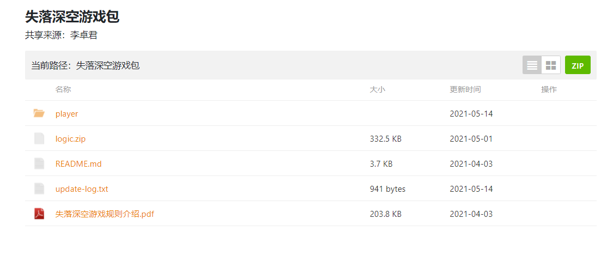
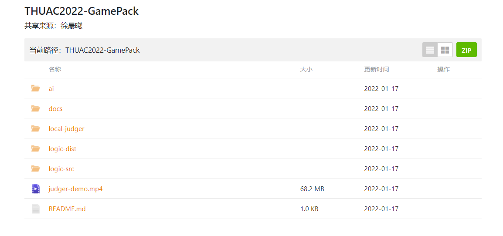
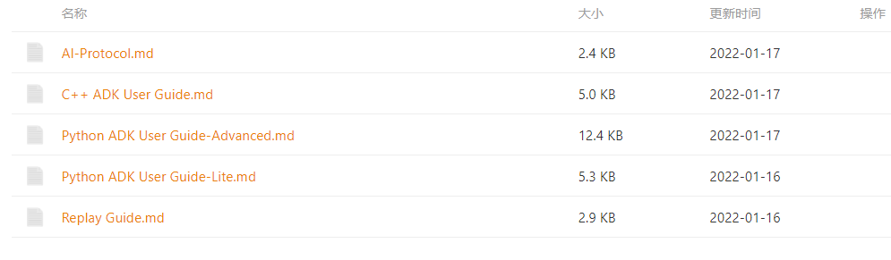
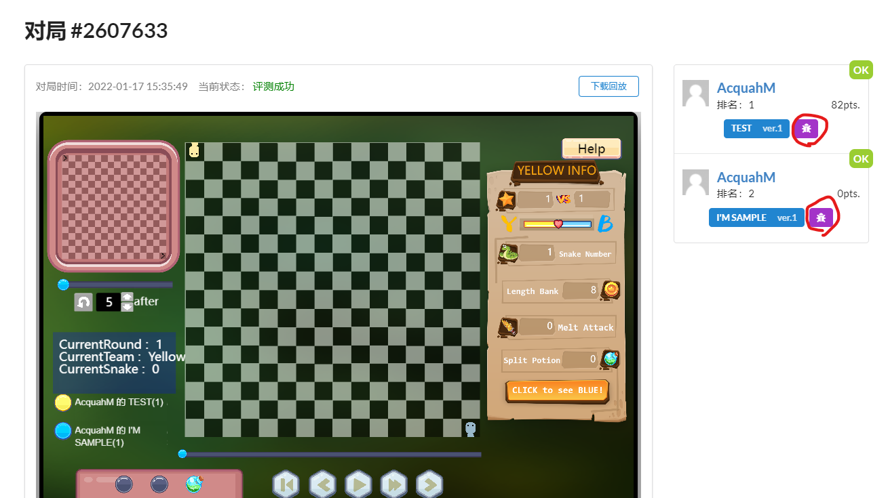
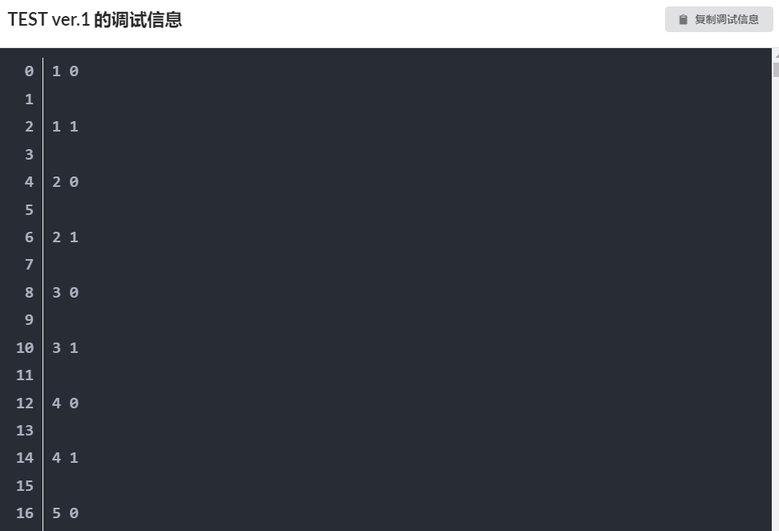
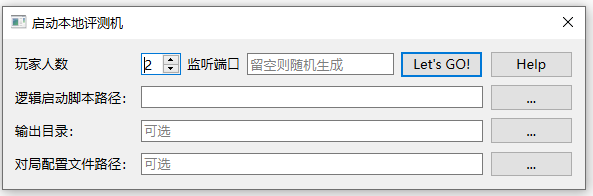
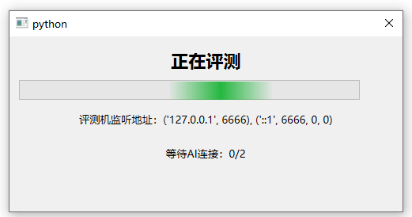
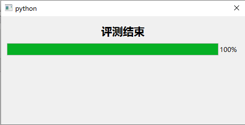
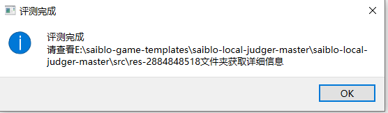
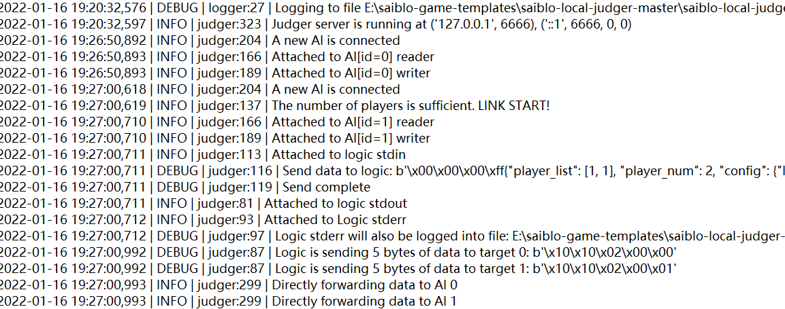

AI 编写手册
下载游戏包
在开始编写你的AI之前，请先前往游戏页面下载游戏包，具体步骤可见用户手册-进入游戏一节。以失落深空游戏为例，游戏包中会包括不限于如下内容：
- 游戏包更新说明
- 游戏规则文档
- 游戏逻辑代码包
- SDK及其说明文档
- 本地调试工具

使用SDK进行AI的编写
对于刚上手的AI编写者，请先在阅读并理解游戏规则的基础上，进一步阅读对应语言所提供的的SDK说明文档及其他相关文档，这些文档会位于游戏包中。以SnakeGo游戏为例


游戏包中，ai文件夹下会包含Python及C++语言的SDK以及示例AI代码；docs文件夹下会包含若干份详细的使用指导，包括SDK的使用说明，通讯协议以及回放文件的格式说明，这些文档也可于游戏手册中查看。请仔细阅读它们中的内容，这对你如何高效地利用SDK实现你自己的AI有着很大的帮助。使用指导可能会包含以下内容：
- AI编写的核心工作，需要完成哪些内容的编写
- 示例AI的基本思路及参考修改方向，你可以依托它来完成你的AI
- SDK所提供给选手的信息，如游戏局面信息等的利用方法
具体请阅读相应游戏的SDK使用引导，以及样例AI中的注释说明，如有任何问题请联系相关人员解答。
实际根据游戏的不同可能会存在其他使用指导，如在线播放器的回放文件格式说明，也请选手进行查看。
在完成AI的编写后，可以通过上传至Saiblo网站进行评测，可参见用户手册-上传AI一节。
如何编写最简单的AI
本章节主要面向初次参赛的选手。对于有经验的选手，可以直接跳过本章节。
在你开始编写你的AI之前，十分建议你先阅读游戏规则文档，并且使用播放器进行几次实际对局，以便你更好地理解游戏的规则。
在绝大多数游戏中，你的AI需要更改SDK中的main函数或其他函数，以实现你的AI的逻辑。在main函数中，你可以通过stdin标准输入流来接收游戏的状态信息，通过stdout标准输出流来发送你的决策信息。具体的信息格式参见游戏的通讯协议文档。请不要输出任何多余信息到stdout，这会影响评测结果。
局面的形式和 AI 的具体操作都应当使用 SDK 中提供的接口来获取和实现。但是，你的 AI 的具体逻辑是由你自己来编写的，你需要做的是，“在合适的时候调用合适的接口”。
最简单的AI策略来自于你自己的经验，使用简单的if-else语句来实现。
以SnakeGo游戏为例，一个很简单的思路是“吃道具”，因此你可能会希望你的“蛇”尽可能向道具移动，但绝不能撞到墙或者自己的身体。你可以通过判断蛇头与道具的相对位置来决定下一步的移动方向。
# 遍历所有道具，找到距离蛇头最近的道具
min_distance = 1000 # 初始化一个很大的值
for item in items:
distance = abs(item.x - snake_head.x) + abs(item.y - snake_head.y)
if distance < min_distance:
min_distance = distance
nearest_item = item
move_direction = 1
# 判断蛇头与道具的相对位置，决定下一步的移动方向
if nearest_item.x > snake.coor_list[0][0] and snake.coor_list[0][0] + 1 <= 15:
if (snake.coor_list[0][0] + 1, snake.coor_list[0][1]) not in snake.coor_list: # 判断是否会撞到自己（这里省略了判断是否会撞到其他蛇）
move_direction = 1
elif ... # 其他情况，略
我们建议你先实现这种简单的AI，然后再逐步优化，因为这些逻辑很可能会在你的AI的后续版本中一直发挥作用。这种简单的判断AI可以在一定程度上完成游戏的要求，也不难调试，但是可能不是很聪明，获得不了很高的名次。
比如，刚刚这个AI找到的路径很可能不是实际最短的。你可能需要使用一些搜索算法，如深度优先搜索、广度优先搜索、A*搜索等来寻找最短路径。这里我们给出一个例子。
# 使用广度优先搜索方法来寻找最短路径
def bfs(start, end, map):
queue = [start] # 使用队列来存储待访问的节点
visited = set() # 使用集合来存储已经访问过的节点，我们不希望重复访问节点
path = [] # 存储当前路径
while queue:
cur = queue.pop(0) # 取出队列的第一个节点，作为当前搜索的节点
path.append(cur) # 将当前节点加入路径
if cur == end:
return path
for next in get_next(cur, map): # 请思考get_next函数的实现
if next not in visited:
queue.append(next) # 将下一个节点加入队列
visited.add(next) # 将下一个节点加入已访问集合
path.pop() # 回溯
return [] # 无法到达终点，返回空路径
这就是一个简单的广度优先搜索的实现。当然，实际的AI设计中你可能需要自学并使用更复杂的算法和数据结构来解决问题。
时常和你的（或者别人的）AI进行对局，观察它的表现；或跟其他的选手多进行交流，也是很好的提高AI性能的方法。
在线评测输出调试信息
在Saiblo平台上进行对局的评测时，你不仅可以通过播放器、回放文件来查看游戏运行时的状况，平台也提供了查看选手AI调试输出信息的功能。
AI需要通过stderr标准错误流来输出自己的调试信息，具体操作方式如下：
Python
C++
关于stderr流的其他信息可以自行查阅相关资料，你可以通过在这里输出回合、操作、场面等有助于你修改AI的信息。
AI添加完调试输出语句后，进行在线评测，在对局页面右侧、AI版本边上有一个紫色的按钮，点击它可以看到你的AI输出的调试信息。

你可以在窗口中查看调试信息，也可以点击右上角的复制调试信息按钮，复制至文本编辑器中查看。
注意！你的AI输出的调试信息不应过多，若输出信息总长度达到系统缓冲区上限，有可能会因为缓冲区被填满，导致你的 AI 被阻塞，而输掉比赛。
本地调试工具使用说明
由于在线评测存在一些弊端，我们在部分游戏中会提供本地调试工具，便于选手进行更全面的调试。调试器会模拟网站上评测机的通信过程，能够在log中输出通信中传输的所有信息，可以方便选手查看自己的AI发送了什么、接收到了什么，也可在自己的AI中进行调试的输出。
在使用本工具前，你可能需要了解AI与逻辑、评测机之间的交互协议，可参见AI与逻辑的通信协议文档以及游戏开发者手册中逻辑与评测机的部分。
启动调试工具
本地调试工具会打包在游戏包中，解压后请打开launcher.exe文件来启动本地调试工具，图形界面如下：

以下是对界面上信息的解释：
- 玩家人数：游戏所需AI个数，可根据游戏的具体情况进行设置
- 监听端口：本调试工具基于TCP Socket提供本地AI连接与游戏运行支持，在运行时需要指定监听端口号，可指定也可随机生成
- 逻辑启动脚本路径：游戏包的逻辑代码也会提供一个类似于
run_logic.sh的逻辑运行脚本或者使用Pyinstaller生成的可执行文件，点开右侧省略号选择该运行脚本即可 - 输出目录：评测机日志、回访文件等生成的文件路径，默认位于当前运行文件夹下
- 对局配置文件路径：需指定一个类型为
json的对局配置文件，包含该对局的初始配置信息，不填则为默认配置信息
进行评测
在填好以上信息后，评测机进入监听环节，界面如下：

此时，需要选手将自己的AI与评测机进行连接，以SnakeGo游戏为例，Python及C++的SDK均提供了与评测机进行交互的功能，只需在运行时指定特殊的运行参数即可：
- C++ :
./main host port，host为一个字符串，为主机地址；port为一个整数，为端口号 - Python :
python3 main.py host port，同C++的参数
每个游戏提供的SDK实现方式可能不一样，请留意相关声明。
当玩家人数到达游戏配置后，评测即刻开始。
评测结束
评测结束后会有弹窗提醒，可查看对应文件夹下的评测信息。


以SnakeGo游戏为例，评测结束后的信息包括以下三个文件：
judger.log为评测机的输出日志，其中包含所有评测机接受或发出的信息

logic_stderr.txt中则包含逻辑通过stderr流输出的内容，包括调试信息、报错信息等
replay.json为游戏的回放文件，具体格式可参见对应游戏的回放文件说明